Краткий гайд по работе с репозиторием
Введение
Работать с репозиторием можно разными способами. Толстый клиент GitHub - самый простой. Он потребует установки приложения (примерно 45Мб) и регистрации (нужен только email). Просматривать файлы удобно и через Web-интерфейс самого GitHub, однако для полноценной работы он не так удобен.
В данном руководстве рассмотрим настройку и работу через толстый клиент.
Работа через толстый клиент
Установка клиента
Ссылка на скачивание онлайн-инсталлятора:
- Windows: https://windows.github.com/
- Mac: https://mac.github.com/
Качаем, ставим. А в это время:
Регистрация на GitHub (если ещё нет аккаунта)
- Заходим на https://github.com
- Жмём sign up 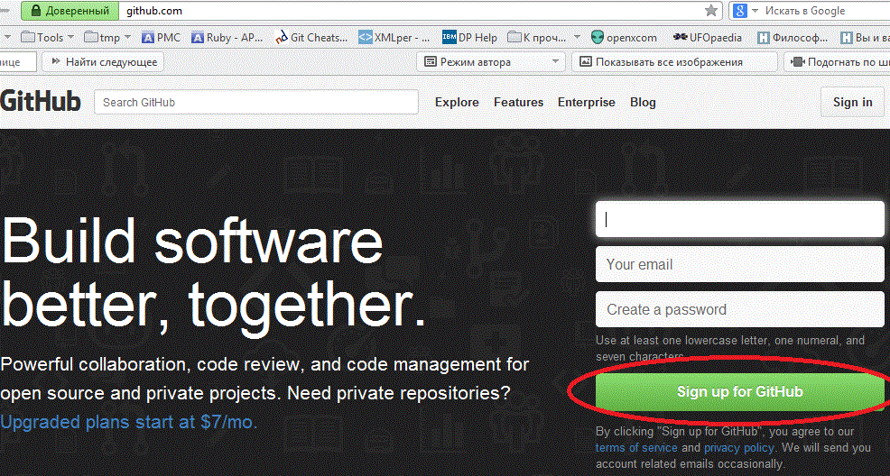
- Нужно ввести имя пользователя (логин) и email для регистрации, а также пароль 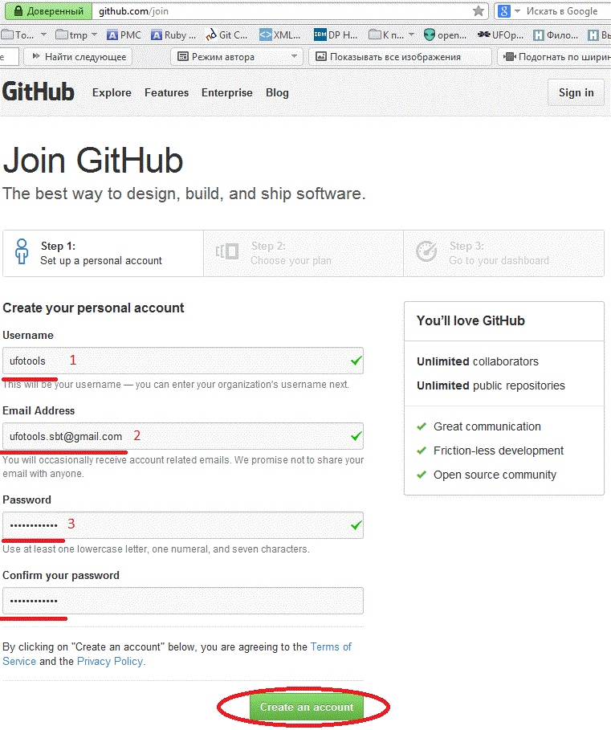
- После подтверждения данных - выбрать план Free (по-умолчанию) - бесплатный. Все функции GitHub будут доступны. 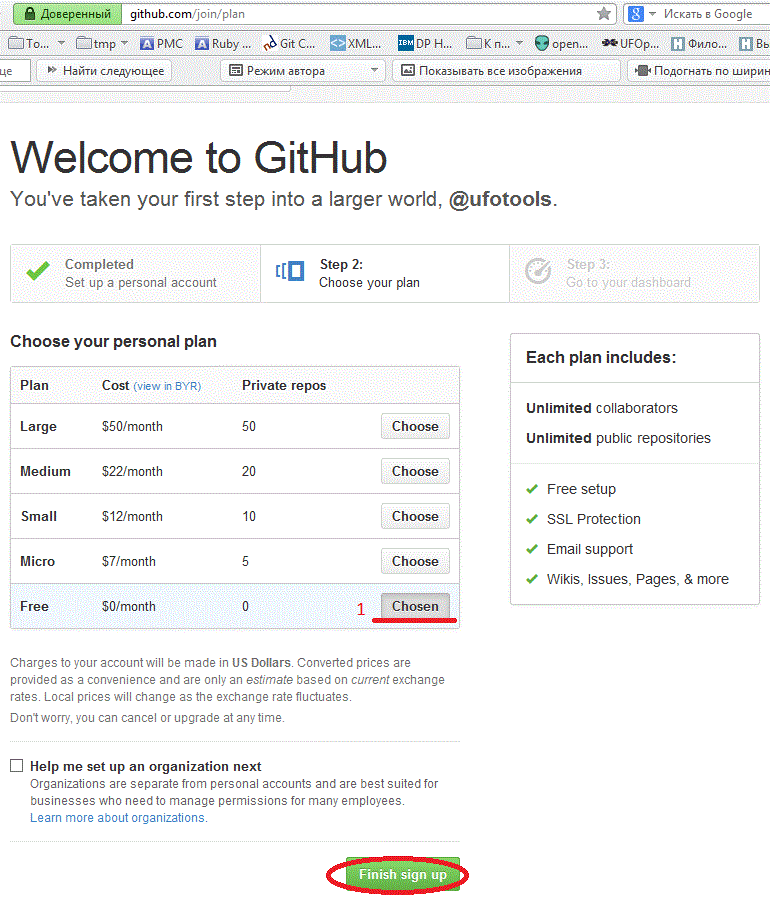
- После успешной регистрации и логина, главная страница github.com выглядит так: 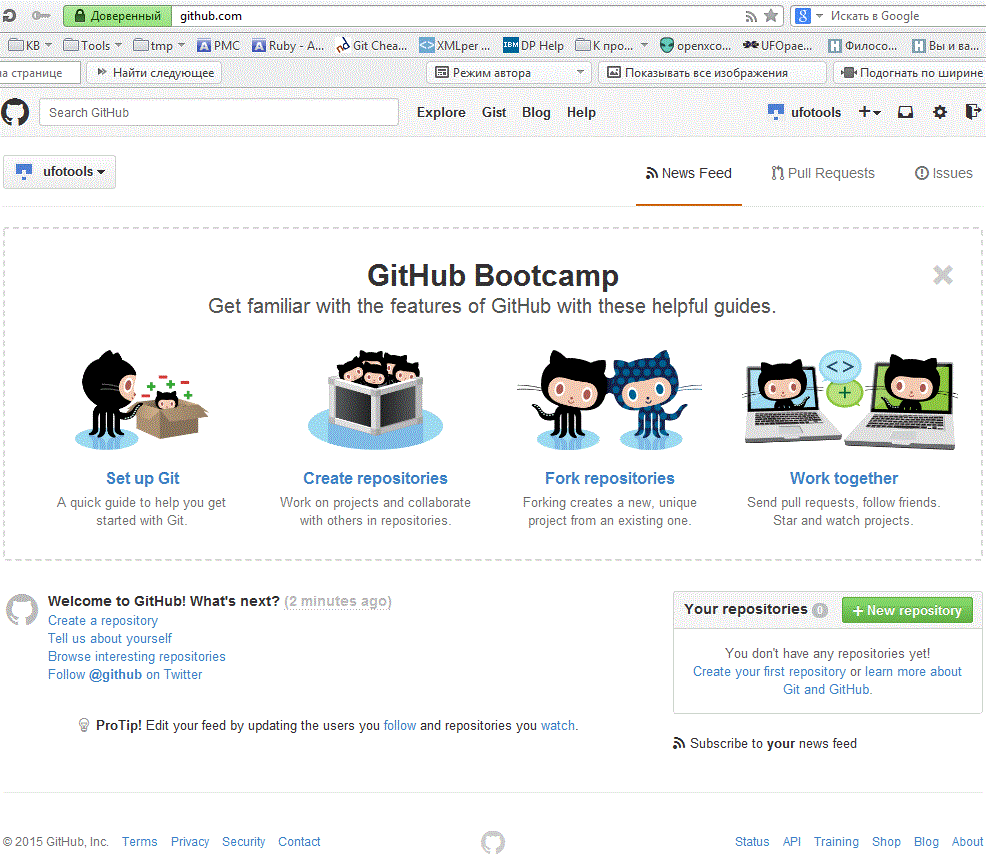
Вступление в группу
- Просим в чатике скайпа (course BD and PA) добавить ваш логин в группу
- На почту придёт инвайт, в нём необходимо перейти по ссылке, или зайти на страничку группы: https://github.com/course-bd-and-pa-bsuir 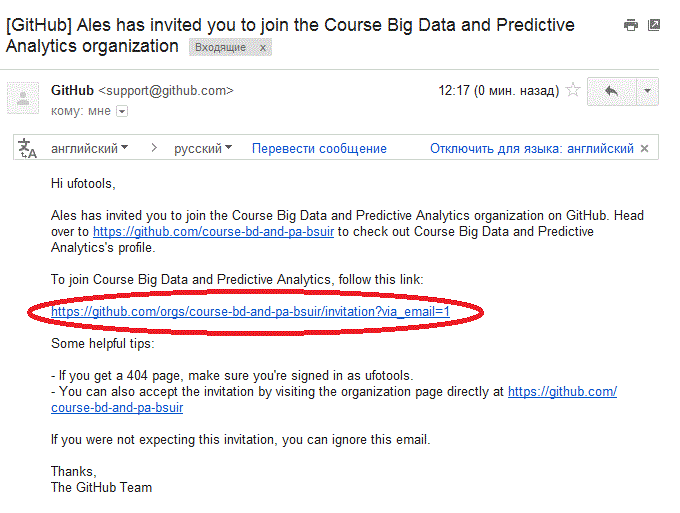
- Перейдя на страницу группы необходимо подтвердить своё участие 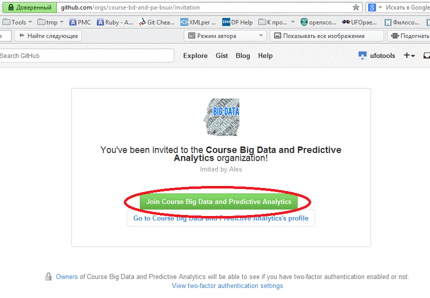
Скачивание репозитория
- Запустить и залогиниться в толстом клиенте 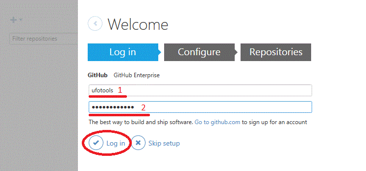
- При первом запуске необходимо настроить свои имя и email, которые будут публично видны в коммитах репозитория 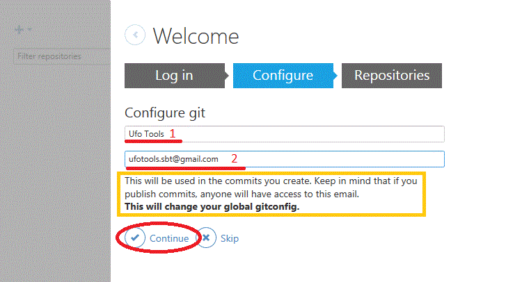
- Зайти на страницу репозитория: https://github.com/course-bd-and-pa-bsuir/r-statics и нажать справа внизу кнопку "Clone in desktop" 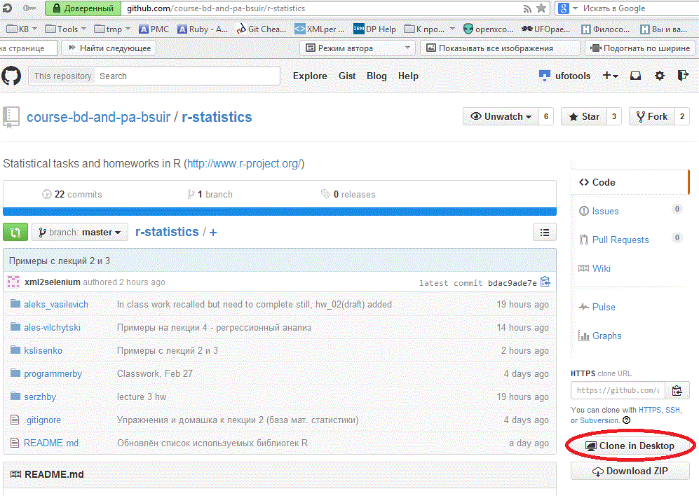
- Браузер может спросить о запуске ссылки через толстый клиент, фокус должен перейти на его окно.
- Необходимо выбрать папку для репозитория. По умолчанию, на Windows это
%USER_HOME%/Documents/GitHub - Во время клонирования будет отображаться прогресс, по окончании процесса репозиторий будет доступен на файловой системе для просмотра и изменения 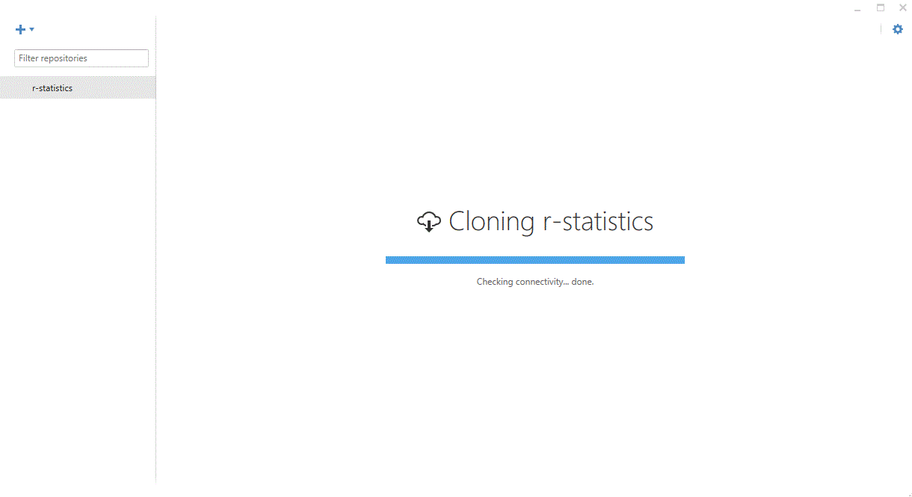
Работа с репозиторием
- Работать с репозиторием надо на файловой системе. Толстый клиент нужен только для синхронизации с GitHub - заливки и подтягивания изменений. 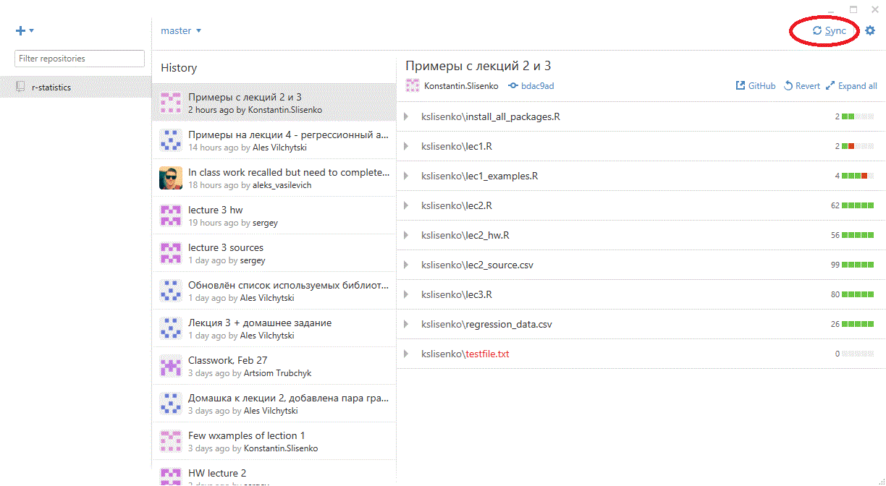
- Создайте в корне репозитория отдельную папочку для себя и храните свои файлы в ней
- После добавления/удаления/изменения файлов их необходимо коммитить в толстом клиенте. Добавляйте словесное описание к коммитам, отражающее суть сделанных изменений. 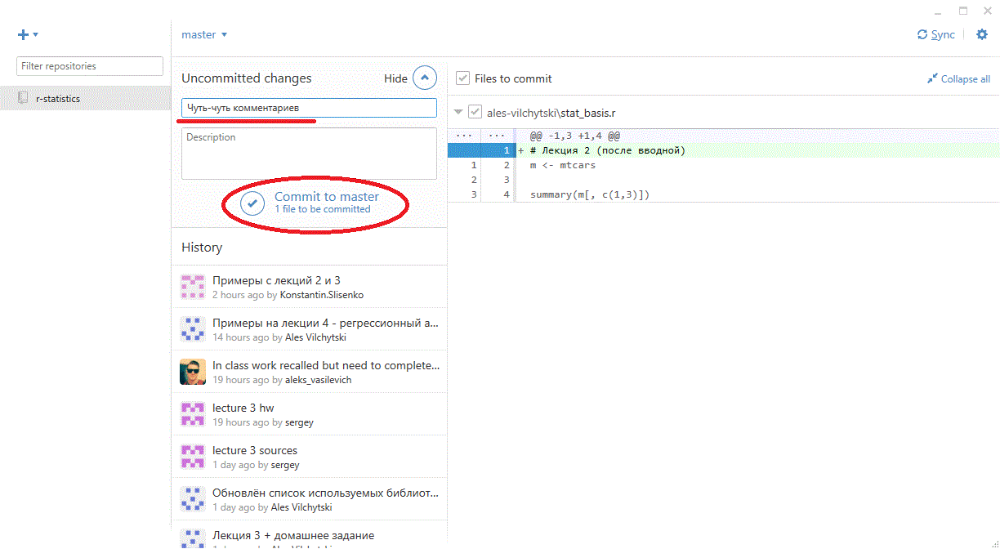
- После коммита (одного или нескольких) изменения нужно синхронизировать. Для этого в толстом клиенте есть кнопочка "Sync". 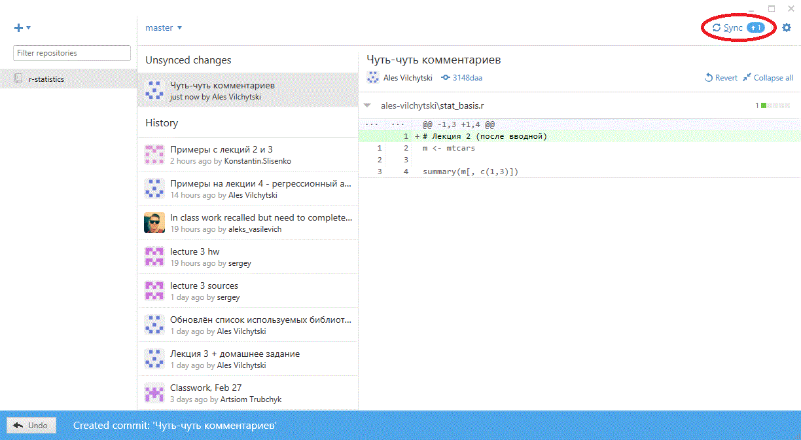
- Также можно (и нужно) выполнять периодическую синхронизацию для получения данных с GitHub.
Другие способы работы
Web-интерфейс самого Github https://github.com/course-bd-and-pa-bsuir/r-statistics
Консолька или графический клиент http://git-scm.com/downloads
В R-studio есть интеграция с Git и SVN (но нужны сами Git и SVN на машине, см. выше)